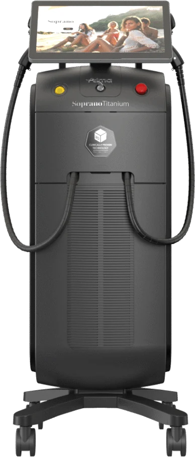

Soprano Titanium in Penang | CANVAS Medical Clinic
Virtually painless laser hair removal for every skin tone — physician-led Soprano Titanium by Alma at our Gurney Walk clinic in George Town. Three laser wavelengths fire at once, with continuous ICE cooling, to reduce hair comfortably and effectively across face and body.


What is Soprano Titanium?
Soprano Titanium is Alma's flagship laser hair removal platform. Rather than a single wavelength, it emits 755 nm, 810 nm and 1064 nm simultaneously from one applicator, so it targets hair follicles at different depths and structures in the same pass. It works with the SHR (Super Hair Removal) method — gradually heating the follicle over repeated passes rather than a single high-energy pulse.
At CANVAS Medical Clinic in George Town, Penang, Soprano Titanium is delivered under physician supervision. Its ICE Plus sapphire tip continuously cools the skin during treatment, keeping the surface comfortable while heat builds where the follicle sits — which is why it suits a broad range of skin tones, including the deeper and tanned skin common across Penang.
How it works
- Consultation & skin assessment. A CANVAS physician reviews your skin tone, hair and history and confirms Soprano Titanium is suitable, with a patch approach where needed.
- Preparation. The area is shaved and cleaned; protective eyewear is worn. Settings are chosen for your skin and the area treated.
- Treatment. The applicator glides over the area in repeated passes, gradually heating the follicles while ICE Plus cooling keeps the skin comfortable — most describe a warm massage.
- Series & results. Hair sheds over the following weeks. A planned series treats follicles across their growth cycles for lasting reduction, with sun protection advised throughout.
Benefits
Virtually painless
The SHR method and constant cooling make sessions comfortable — no harsh snapping.
Suits all skin tones
Triple wavelengths and cooling make it appropriate for deeper and tanned skin.
Effective reduction
Targeting follicles at multiple depths supports lasting, even hair reduction.
Fast for large areas
A large applicator covers legs, back or arms quickly.
Face & body
From underarms and legs to bikini and facial areas, tailored to you.
Physician-supervised
Settings and safety confirmed by a doctor, not an unsupervised operator.
Who it's for
Soprano Titanium suits most people seeking long-term hair reduction, but suitability is always confirmed at consultation. You may be a good candidate if you want to:
- Reduce unwanted hair on the face or body for the long term
- Avoid the discomfort of older hair-removal lasers
- Treat deeper or tanned skin tones safely
- Stop the cycle of shaving, waxing and threading
- Treat larger areas quickly and comfortably
- Address ingrown hairs and irritation from other methods
Laser hair removal is not suitable during pregnancy, over certain skin conditions or with some photosensitising medications, and works best on hair with pigment. Your physician will confirm your suitability and expectations at consultation.
Why CANVAS
At CANVAS Medical Clinic, Soprano Titanium is delivered by qualified, LCP-certified physicians on genuine Alma technology — never handed to an unsupervised operator. We treat the broad range of skin types common to Penang and tailor every protocol to you.
We are located at Gurney Walk in the heart of George Town, with covered parking at Gurney Walk and the adjacent Gurney Plaza. We recommend booking in advance, and walk-ins are welcome.
- LCP-certified physicians plan and supervise every Soprano Titanium session
- Genuine Alma platform with settings matched to your skin tone
- Protocols suited to the deeper and tanned skin seen across Penang
- Comfort-first, virtually painless treatment
- Central Gurney Walk location with easy covered parking
Soprano Titanium in Penang, answered.
Care led by our physicians
Your Soprano Titanium treatment at CANVAS is planned and carried out by qualified, LCP-certified doctors registered with the Malaysian Medical Council — care is never delegated to unsupervised operators. Meet the physicians behind your treatment:
- LCP CertifiedPhysician-led care
- MMC RegisteredQualified doctors
- Genuine SystemsAuthentic & registered
- Open Daily10am – 10pm
Related treatments
Explore other physician-led laser and skin treatments at our Gurney Walk clinic in George Town, Penang.
From our patients
Read our reviews on Google →Considering Soprano Titanium in Penang?
Book a consultation with our physicians at Gurney Walk. We'll assess your skin and hair and design a Soprano Titanium plan that reduces hair comfortably — matched to your skin tone.
Reserve a Consultation